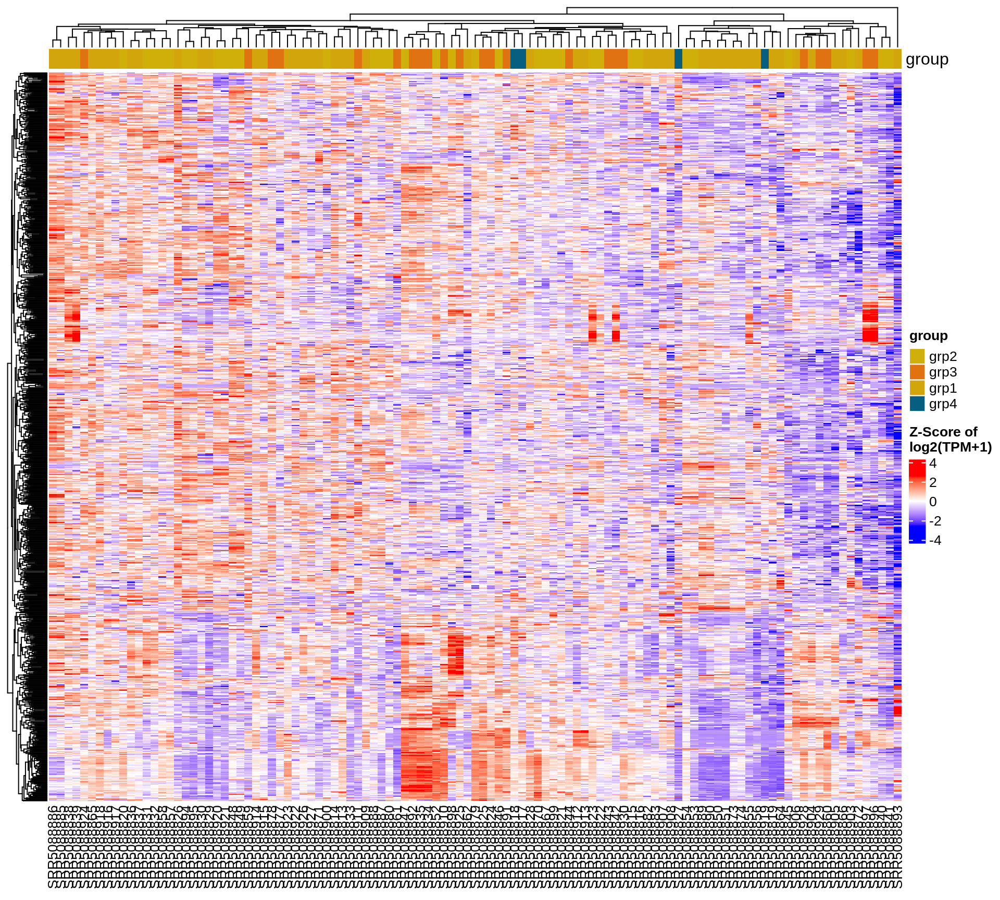
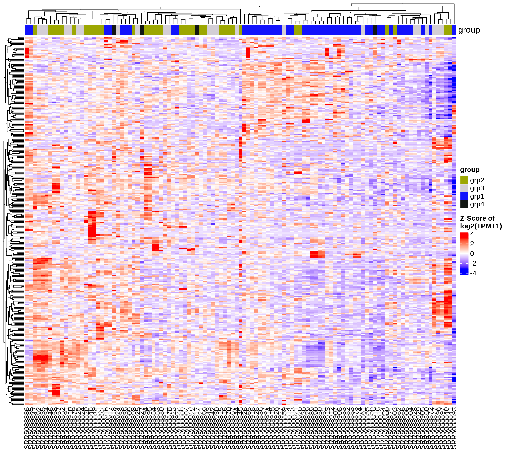
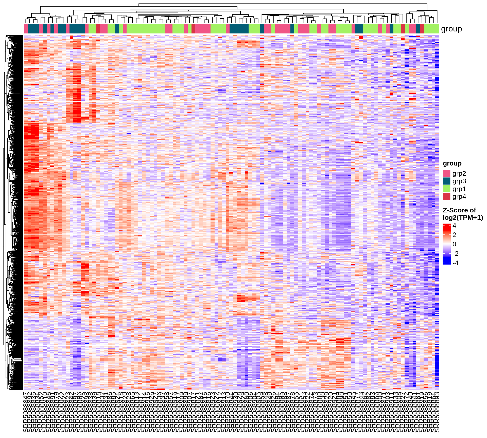
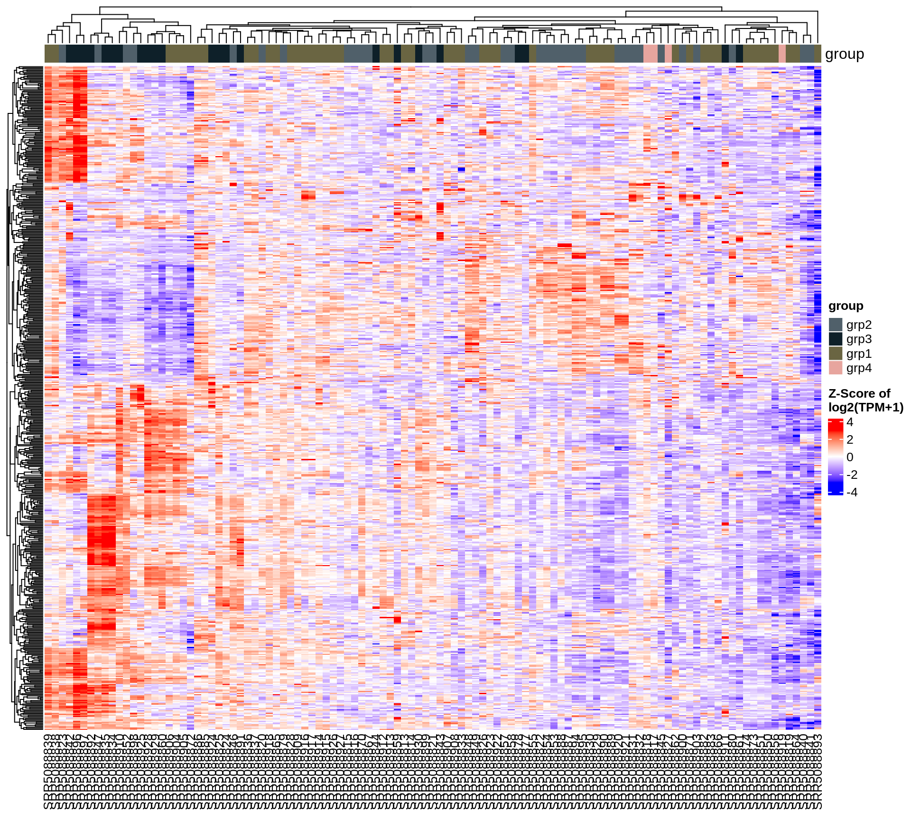

Chapter 5 Heatmap plots
Heatmaps are useful to visualize the differentially expressed genes across multiple conditions at the same time. In this chapter, we present two different types of heatmap: 1) A heatmap plotted using the top 1000 most variable genes and 2) Heatmaps for significantly changed genes of all comparison groups.
In the first heatmap, the variance was calculated for each gene, and then ranked in decreasing order. To reduce the size and plotting time of the heatmap, only the top 1000 most variable genes were chosen. Although genes with large variances may not refect differentially expressed genes among specific comparison groups, they remain meaningful when referring to the global changes within the current dataset.
Then we present heatmap(s) of all comparison groups by subsetting the samples. For each comparison, only samples involved in the comparison will be plotted on the heatmap. The number of heatmaps will also be adjusted based on the number of comparisons analyzed by the pipeline. Only the top 1000 significantly changed genes will be plotted if too many different genes are differentially expressed. If no more than 1000 significantly changed genes for the comparison, all significantly changed genes will be plotted.
The heatmaps were drawn using the log2(TPM+1) expression values with Z-score transformation. By default, hierarchical clusterings were performed on both row (genes) and column (samples), indicating the similarities between genes and samples. Thus, similar genes and samples will be clustered closely. The heatmaps also display the grouping information provided before running the pipeline. It provides additional information for the users to compare the biological grouping information and the unsupervised hierarchical clustering results. All heatmaps in this chapter were plotted using the same design, and they only differ in the genes and samples selected during the plotting step.
5.1 Heatmap of 1000 most variable genes
This heatmap plots the top 1000 most variable genes across all samples. The x-axis displays the sample names, and colors indicate the expression Z-scores, shown as the color bar at the lower right corner.

5.2 Heatmap of all comparisons
The heatmaps in this section select the most significant genes to plot, with a maximum of 1000 genes if there are more than 1000 significantly expressed genes. These genes have been pre-computed and selected before running the EAreport step, and they were based on the differential expression analysis results when running EArun.
There are total 3 comparisons in this project.
| Subsetting_group | Model | Covariate_levels | Group_name | Group_test | Group_ctrl | Analysis_method | Shrink_logFC | LFC_cutoff | |
|---|---|---|---|---|---|---|---|---|---|
| group_grp2.vs.grp1 | group | group | grp2 | grp1 | DESeq2 | Yes | 0 | ||
| group_grp3.vs.grp1 | group | group | grp3 | grp1 | DESeq2 | Yes | 0 | ||
| group_grp3.vs.grp2 | group | group | grp3 | grp2 | DESeq2 | Yes | 0 |
The following significantly changed genes were used to generate the heatmaps.
| Comparison | DEG | Up | Down |
|---|---|---|---|
| group_grp2.vs.grp1 | 302 | 214 | 88 |
| group_grp3.vs.grp1 | 2095 | 1666 | 429 |
| group_grp3.vs.grp2 | 579 | 445 | 134 |
5.2.1 Comparison: group_grp2.vs.grp1
5.2.2 Comparison: group_grp3.vs.grp1
## `use_raster` is automatically set to TRUE for a matrix with more than 2000 rows. You can
## control `use_raster` argument by explicitly setting TRUE/FALSE to it.
##
## Set `ht_opt$message = FALSE` to turn off this message.## 'magick' package is suggested to install to give better rasterization.
##
## Set `ht_opt$message = FALSE` to turn off this message.
5.2.3 Comparison: group_grp3.vs.grp2
